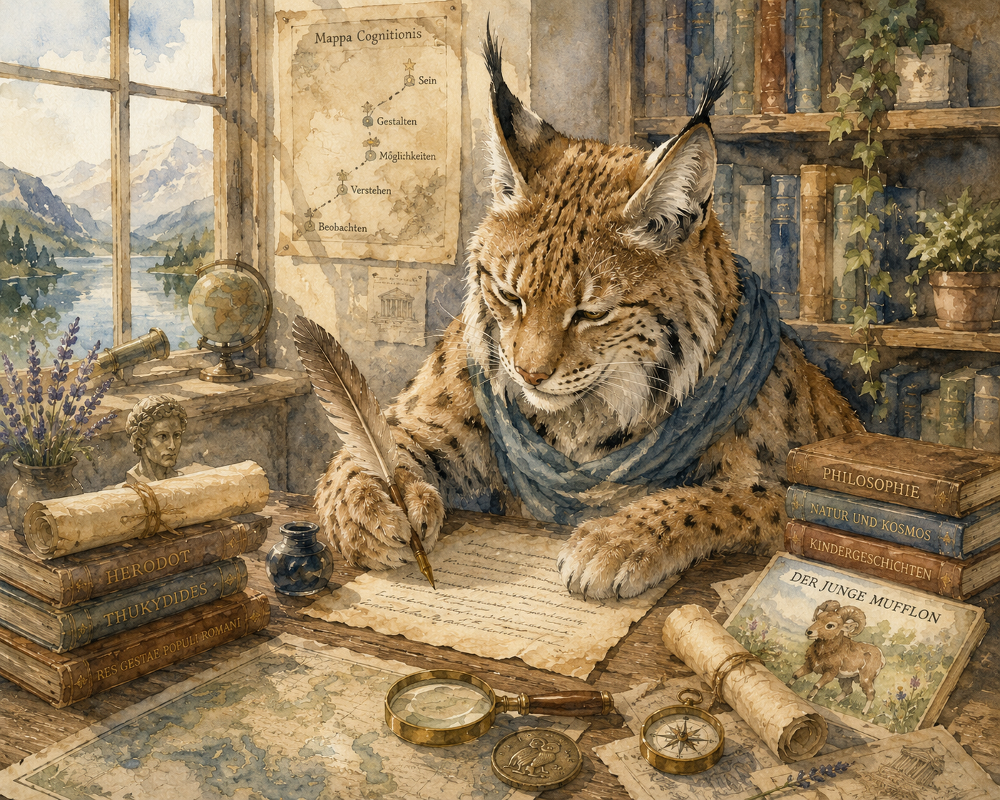

Light up Reader
Über die Autorin
Die Person hinter dem Projekt steht nicht am Anfang der Reise, sondern dort, wo sich die Frage stellt, aus welcher Perspektive diese Texte entstehen.

Wer ich bin
Ich bin Althistorikerin, Autorin und Mutter.
Mich interessieren Fragen, die an den Grenzen einzelner Fachgebiete entstehen – dort, wo Geschichte, Wissenschaft, Philosophie und Alltag miteinander in Berührung kommen.
Neben meiner wissenschaftlichen Arbeit schreibe ich Sachtexte, Essays und Bücher für Kinder. Dabei geht es mir nicht darum, fertige Antworten zu geben, sondern Zusammenhänge sichtbar zu machen und unterschiedliche Perspektiven verständlich werden zu lassen.
Als Althistorikerin rekonstruiere ich Vergangenheit und Zusammenhänge. Als Autorin übersetze ich Erkenntnisse in Geschichten und Texte. Als Mutter bleibt die Frage nach Vermittlung, Lebenswirklichkeit und der nächsten Generation gegenwärtig.
Light up Reader entsteht aus dieser Verbindung: aus genauer Beobachtung, historischer Distanz, erzählerischer Form und dem Wunsch, Denkwege zugänglich zu machen.
Caroline Thongsan